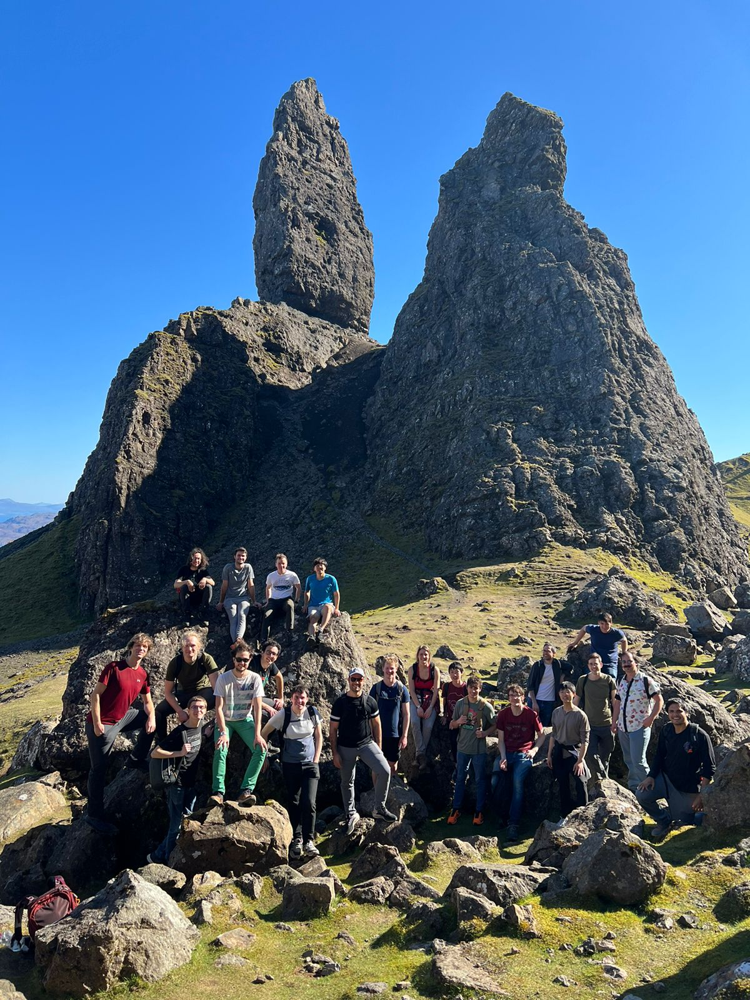

- Programme
- Planning
- Talk 1: Magdalena, Vertex algebras, definitions and motivations
- Talk 2: Robert, Examples of vertex algebras
- Talk 3: Felix Thimm, Vertex coalgebras, vertex Lie algebras, vertex enveloping algebras
- Talk 4: Felix Kung, Quantization of vertex algebras
- Talk 5: Nikola, Arc spaces and Poisson vertex algebras
- Talk 6: Thibault, Double Poisson vertex algebras
- Talks 7 and 16: Alyosha, Affine W-algebras: the absolute basics
- Talk 8: Marco, Joyce's vertex algebra and moduli spaces
- Talk 9: Sebastian, Invariants and wall-crossing with Joyce's Lie algebra
- Talk 10: Shivang, Shuffle realisation of quantum groups
- Talk 11: Patrick, Cohomological Hall algebra of a quiver and shuffle algebras
- Talk 12: Noah, CoHA of a preprojective algebra and shuffle algebras
- Talk 13: Tanguy, The critical cohomological Hall algebra of a quiver with potential
- Talk 14: Sarunas, The BPS Lie algebra
- Talk 15: Woonam, Cohomological Hall algebras and vertex algebras
- Research Talk 1: Arkadij, Wall-crossing for Calabi-Yau fourfolds and applications
- Research Talk 2: Chenjing, Counting sheaves on curves